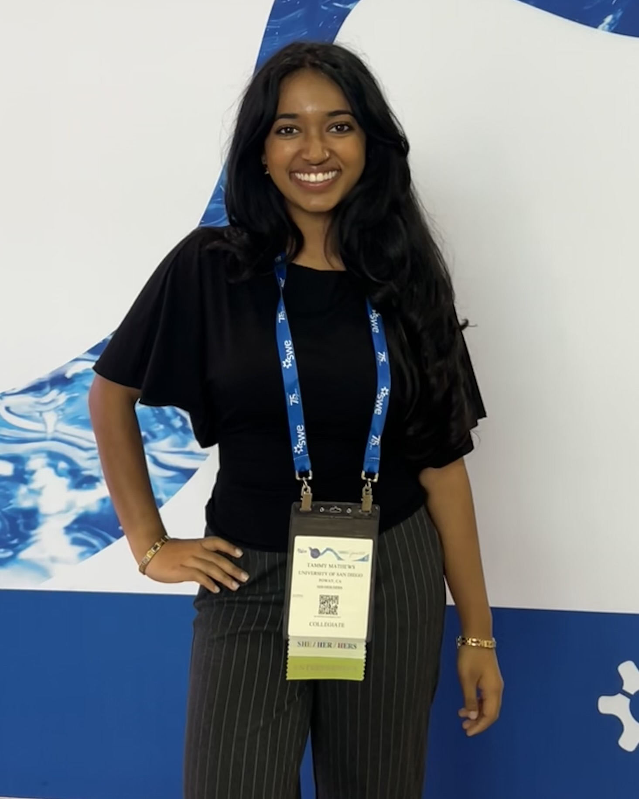
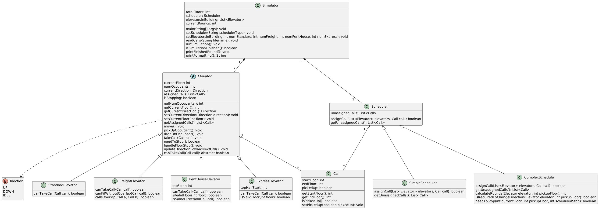

Hi there! I’m a Junior studying Computer Science at the beautiful University of San Diego, where I’ve been lucky to explore and expand on my interests in technology and innovation. Through undergraduate research and my internship at Brightly Software, a Siemens company, I’ve had the chance to work on applying AI to solve real world engineering problems. What I love most about AI/ML is how it keeps pushing the limits of what’s possible and open up new ways to build things that matter. I love working on projects that make people’s lives a little easier and I’m always eager to explore new technologies and perspectives that help me think more creatively and build in new ways.
Outside the classroom, I'm involved in communities that mean a lot to me, like the Society of Women Engineers, InterVarsity Christian Fellowship and the Industry Scholars Program. I also serve as Outreach Chair for USD’s Association for Computing Machinery and previously as Treasurer for Theta Tau Lambda Epsilon.
I am actively looking for opportunities in the software engineering, data science/engineering or AI/ML field, and you can reach me anytime at tmathews@sandiego.edu!

This project is a Java elevator simulator that models a real-world building elevator system. The simulator manages multiple elevator types, assigns calls to elevators using different scheduling strategies, and runs the system round by round until all calls are completed.
The simulator manages four types of elevators: Standard, Freight, Penthouse, and Express each with their own rules about which floors they can visit and which calls they can accept. Calls are assigned by either a Simple Scheduler, which checks elevators left to right, or a Complex Scheduler, which finds the elevator that can reach the pickup floor fastest.
The project uses all four pillars of OOP. Abstraction and inheritance are used through the abstract Elevator class which defines shared behavior like movement and pickup/dropoff logic, while each elevator type extends it with its own canTakeCall logic. Encapsulation keeps fields private and exposes only what is needed. Polymorphism allows the simulator to treat all elevators the same way while each behaves differently. The Scheduler interface follows the Open/Closed principle, new scheduler types can be added without changing existing code.
I was responsible for implementing all four elevator types and their unit tests using test-driven development. I wrote all test cases I could think of before implementing the code, committing them and its implementation at a time.
This project helped me get much more comfortable with test-driven development and designing class hierarchies. I also got a lot of practice with Git branching, pull requests, and code reviews working as part of a team.
tmathews@sandiego.edu